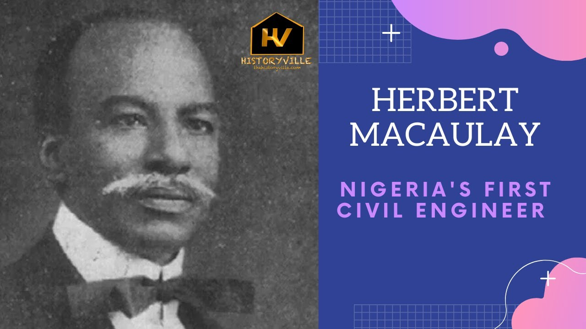

.jpg)

Macaulay entered primary school in 1869 and from 1869 to 1877, he was educated at St Paul's Breadfruit
School, Lagos and CMS Faji School, Lagos.[9] From 1877 to October 1880, he attended CMS Grammar School,
Lagos for his secondary education.[9] He was a student at the school when his father died in 1878.[10][11]
In 1880, he joined his maternal uncle's trade steamer and embarked on a trade and missionary journey across
the Niger River visiting Bonny, Lokoja, Gbebe and Brass.[10] After going to a Christian missionary school,
he took a job as a clerical assistant and indexer at the Department of Public Works, Lagos.[10] Thereafter,
with the support of the colonial administration, Macaulay left Lagos on 1 July 1890 to further his training
in England.[citation needed] From 1891 to 1894 he studied civil engineering in Plymouth, England, and was
also a pupil of G.D. Bellamy, a borough surveyor and water engineer in Plymouth.[12] In 1893, he became a
graduate of the Royal Institute of British Architects, London.[13] Macaulay was also an accomplished
musician who received a certificate in music from Trinity College, London and a certificate in violin
playing from Music International College, London.
Macaulay married Caroline Pratt, daughter of an African Superintendent of Police in December 1898.[19] Their
marriage came to an end in August 1899 upon Caroline's death during childbirth and Macaulay is reported to
have vowed never to marry again.[20] While Macaulay never remarried in the Church,[20] he had liaisons
including Ms. da Souza who returned to Lagos, her ancestral home, from Brazil and lived into her 90s, from
whom he had a number of children,[19] as well as companionships which bore no children (Stella Davies Coker,
daughter of J. P. L. Davies and Sarah Forbes Bonetta, lived with Macaulay from 1909 until her death in 1916.
They had a daughter named Sarah Abigail Idowu Macaulay Adadevoh. Sarah Abigail was named after her maternal
grandmother Sarah Forbes Bonetta and her paternal grandmother Abigail Crowther).[21] Macaulay was reportedly
the first Nigerian to own a motor car.[22][23]
Though from a family of devout Anglicans, Macaulay embraced indigenous African religious traditions, was
superstitious, and dabbled in the practice of magic.[19] His personal papers contain notes from fortune
tellers and diviners with instructions around taboos, divinations, sacrifices, and other occult
practices.[24][19] Macaulay was also a member of the Association of Babalawos (Ifa priests) of Lagos.[19]
Macaulay was a great socialite in Victorian Lagos. He organized concerts and film shows (He was among the
first Nigerians that brought films to Nigeria by inviting film companies to come to Lagos to exhibit films)
at his residence (named "Kirsten Hall" after his German Consul friend Arthur Kirsten) on 8, Balbina Street
in Yaba.[19] Macaulay was nicknamed "Wizard of Kirsten Hall" because of his ability to obtain classified
information. Macaulay ran a network of informants who he paid handsomely. Many times, minutes from colonial
government meetings would be leaked in newspapers that Macaulay was associated with. Whole sections of
colonial government files and telegrams can be found in the Macaulay Papers at the Africana section of the
Library at the University of Ibadan.[